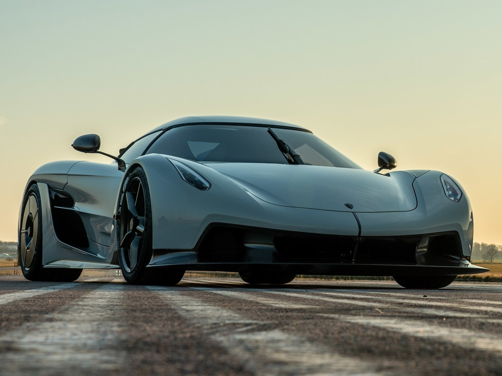

Koenigsegg Jesko Absolut

Гиперкар Jesko Absolut был представлен шведским производителем спортивных машин Koenigsegg в начале 2020 г. Машина создана для получения высокой скорости на прямых, которая должна превысить 480 км/ч (официальные данные не озвучены). Силовой агрегат с двойным наддувом и V-образным 8-цилиндровым блоком развивает 1622 л. с. В качестве топлива используется смесь бензина и спирта. В состав трансмиссии входит 9-ступенчатая роботизированная коробка Light Speed Transmission, крутящий момент передается на задние колеса.
SSC Tuatara — суперкар американской компании Shelby Super Cars. Концепт-версия этого автомобиля была официально представлена еще в 2011 году в Китае (г. Шанхай). Сама компания позиционирует этот суперкар как потенциально самый быстрый серийный автомобиль в мире. Производство началось в 2014 году. Несмотря на то, что анонс автомобиля состоялся почти 10 лет назад, серийное производство замедлилось. Первый двухдверный суперкар компания смогла представить только в Филадельфии в феврале 2020 года.